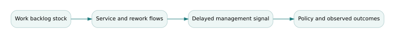

Stock-flow models, delays, and policy resistance
Graduate study for Book 13 — Systems Thinking and Dynamics. Companion to the existing course materials; the definitions, mathematics and decisions below are educational rather than operational approvals.
The governing question
Why does a well-intended policy often improve a metric briefly and then make the system worse?
Theory and conceptual structure
Systems dynamics begins by distinguishing stocks from flows. A stock is an accumulation with a unit, boundary and conservation relationship: unfinished engineering work, trained operators, reserve vehicles, or technical debt. A flow is its rate of change. A causal-loop diagram helps surface feedback hypotheses, but it does not establish that a simulation conserves units or even contains a physically possible mechanism. A stock-flow model forces those ambiguities to be resolved.
Suppose a dispatch unit has a backlog. New requests enter at an arrival rate; completed requests leave at a service rate constrained by available capacity. Increasing target throughput is ineffective if service completion is limited by verification or maintenance resources. Worse, pressure to close work faster can increase rework, returning additional work to the backlog. This creates a reinforcing loop beneath a superficially balancing policy.
Delays matter. Decision makers often act on yesterday's backlog estimate. A large corrective response to a delayed signal may overshoot, especially when vehicles or trained operators cannot be added instantly. Discrete-time simulation additionally depends on step size. A stable continuous feedback law may oscillate in a coarse forward-Euler model; the distinction must be tested rather than assumed.
Policy experiments should examine unintended consequences and time horizons, not merely one steady-state outcome. A temporary reduction in reported backlog may be purchased by suppressing demand or redefining completion. Model credibility requires independently checked stocks, observables, calibration data and counterfactual interventions. When a system contains strategic organizational actors, a stock-flow model may be an incomplete causal account of incentives and changing rules.
Formal model and derivation
The formalism is useful only inside an explicit model contract: a defined system boundary, input ranges, configuration, assumptions, uncertainty sources, and an intended decision. Check both units and the semantics of the variables before executing the arithmetic. The result is a conditional engineering claim, not an unconditional guarantee.
Fully worked Northstar case
Set k = 0.6/day, step h = 1 day. The discrete error multiplier is 0.4, giving convergent adjustment toward target. With h = 4 days, multiplier is −1.4; simulated error oscillates with increasing magnitude even though the underlying continuous first-order model decays. The numerical artifact should not be misinterpreted as evidence of a real unstable organization. Now add a three-day staffing delay: the real closed loop can become unstable even with a numerically sound solver.

Counterexample and critical review
Counterexample: A policy cuts “time to completion” by removing independent review, which later increases escaped defects and rework. A model without the rework stock predicts permanent improvement. The missing mechanism, not the solver, is the decisive error.
An independent reviewer should be able to reproduce the favorable result and find at least one material scenario in which it changes. A sensitivity study that does not touch an important assumption can be technically reproducible but decision-irrelevant. Record the source of every number, identify the accountable acceptance authority, and state what the evidence cannot establish.
Graduate problem set
Attempt each problem before opening the worked solution. In a graded submission, supply units, formulas, assumptions, and a reasoned interpretation—not just the numerical result.
Problem 1
For k=.6 and h=1, determine the Euler multiplier.
Worked answer and engineering interpretation
1−0.6×1 = 0.4, which is stable and monotonic.
Problem 2
For the same model at h=4, explain the simulated behavior.
Worked answer and engineering interpretation
Multiplier 1−2.4 = −1.4; the discrete approximation diverges with alternating sign, even though the original ODE is stable.
Problem 3
Design an additional stock to capture quality degradation from accelerated closures.
Worked answer and engineering interpretation
Track unresolved defects or technical debt; increase that stock through rushed completion and decrease it through rework/remediation capacity. Feed it back into effective arrival or service rates.
Laboratory and research transfer
Complete the accompanying graduate laboratory. Produce the artifact described there, compare your result to at least one alternative hypothesis, and record what additional evidence would change your recommendation.
Connections to the curriculum
- Open Book 13 and its existing weekly lessons.
- Find supplementary calculations and datasets.
- The canonical curriculum remains the source of assessed requirements; this study explains one demanding conceptual thread and does not replace its assignments.
Additional reference reading
These external resources complement the fictional examples; they are not required for offline use.
NS-GS4.1 extension — delay changes the feedback stability boundary
Policies that allocate more dispatch and evidence-review capacity in response to a growing backlog are feedback controllers, even if the enterprise calls them governance interventions. Consider a local deviation \(x_t\) from a desired backlog, measured once per review interval. The model isolates delay effects so that stability can be derived rather than assumed.
Two characteristic equations
With an instantaneous response \(x_{t+1}=(1-g)x_t\), convergence requires \(|1-g|<1\), i.e. \(0<g<2\). But when the action is based on the previous review's backlog, \(x_{t+1}=x_t-gx_{t-1}\). Seeking solutions \(x_t=r^t\) yields \(r^2-r+g=0\). The discrete second-order stability test gives \(0<g<1\). A gain of 1.2, which would be valid in the no-delay simplification, is unstable under this one-period delay.
Reproducible Northstar example
Start with \(x_{-1}=10\), \(x_0=10\). With \(g=0.7\), the next three deviations are 3, −4, and −6.1; the oscillations subsequently decay, ending at approximately 0.542 by the twelfth modeled update. With \(g=1.2\), the trajectory begins −2, −14, −11.6, and 5.2, reaches a magnitude above 33 over the same horizon and does not settle. These are signed deviations, not negative counts of passengers. Production backlog and staff capacity would require nonnegative saturation, fatigue, integer resources and nonstationary demand.
Limits and policy interpretation
The linearized model explains local behavior around a steady operating point; it does not justify indefinitely extending signed quantities into a physical queue. A review board should identify latency, controller saturation and rework before prescribing “stronger escalation.” A good empirical test compares the arrival process and evidence-backed completions under the same units and time window. Do not claim a controller is stable from a short favorable trajectory alone.
Worked exercise and explained solution
Problem. Assess delayed gains 0.9 and 1.05 without simulation.
Solution. For the characteristic \(r^2-r+g\), \(0<g<1\) is required, so 0.9 satisfies the local stability criterion while 1.05 does not. At gain 0.9 the complex-root modulus is \(\sqrt{0.9}\approx0.949\), which implies slow oscillatory decay. With 1.05 its modulus is \(\sqrt{1.05}\approx1.025\), indicating amplification. This is a local prediction only. Repeat the exercise in the integrated lab with a realistic capacity cap.
Canonical overlap. This chapter complements dynamics-and-resilience by testing one-period organizational delay explicitly.
Reproducibility record. Re-run the controlled executable model using the shared case data, then compare with the computed evidence record. The numerical outputs do not establish field validation or an authorized operating decision.